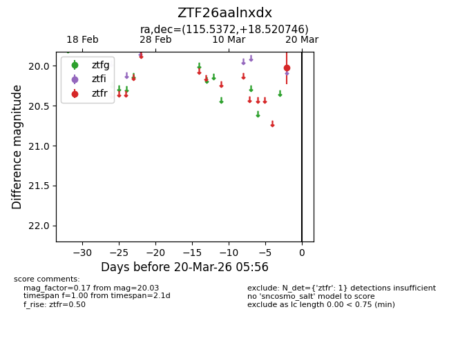
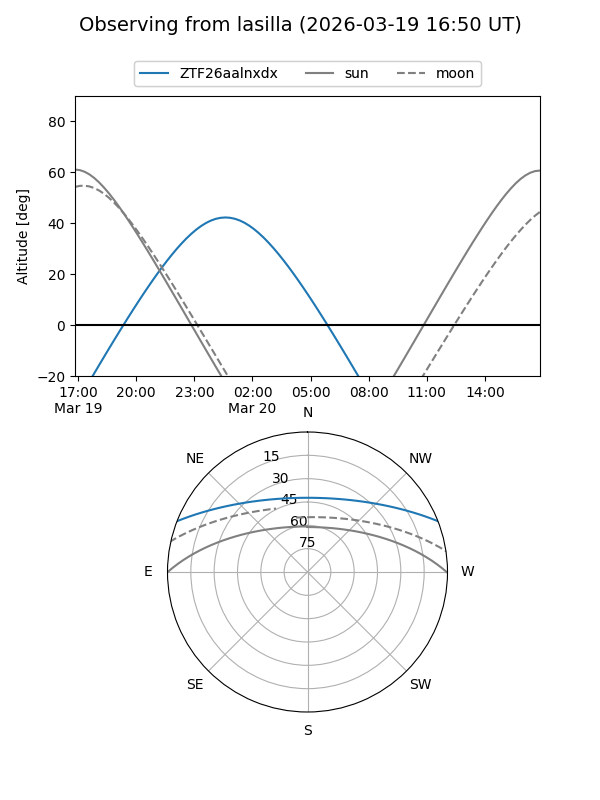
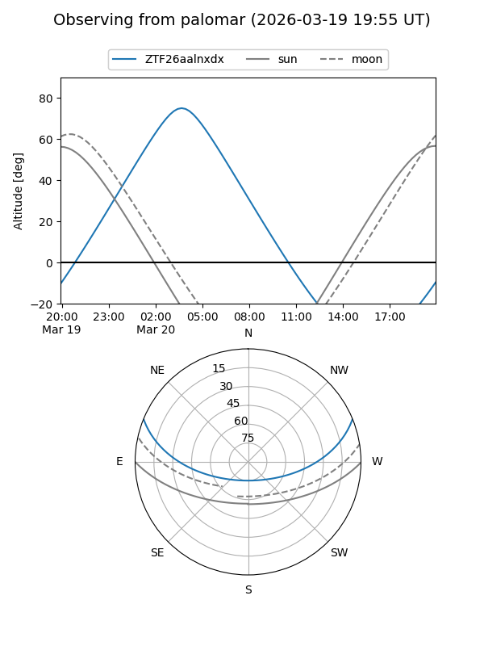

ZTF26aalnxdx
Target ZTF26aalnxdx at 2026-03-20 05:59
Aliases and brokers:
FINK: link
Lasair: link
ALeRCE: link
alt names
ZTF26aalnxdx (ztf,fink_ztf)
Coordinates:
equatorial (ra, dec) = 115.5372,+18.52075
equatorial (HMS+DMS) = 07:42:08.93,+18:31:14.69
galactic (l, b) = (201.4557,+19.27178)
Flags:
Photometry:
last ztfr=20.03
1 ztfr detections
Lightcurve

Visibility


Additional plots